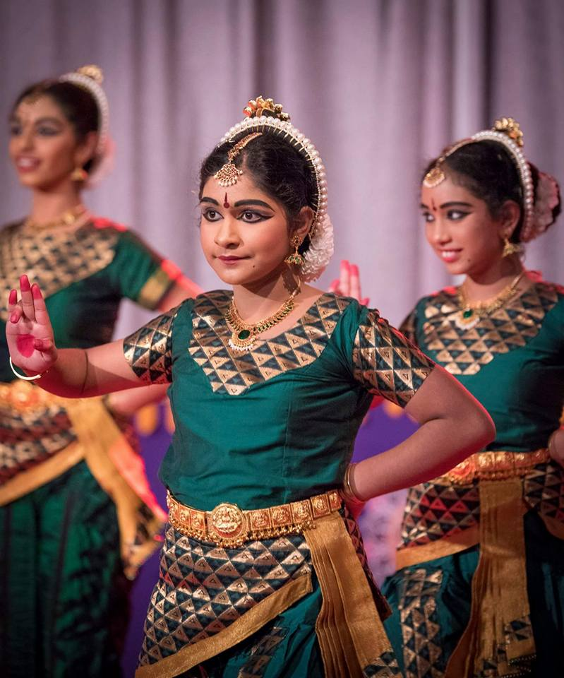
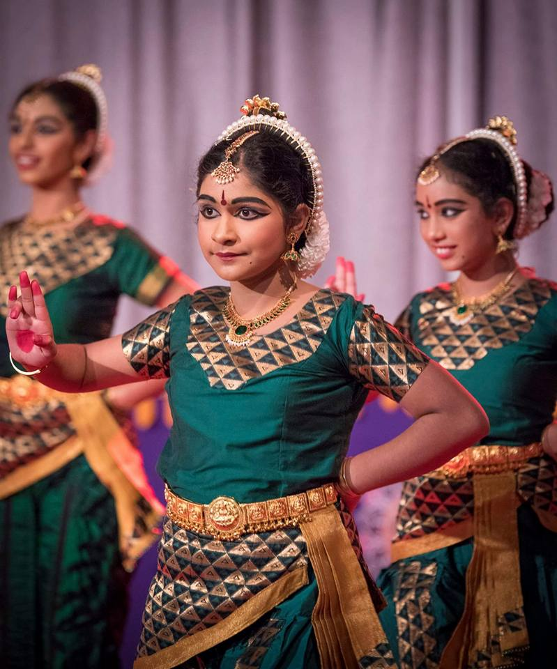

Saranya’s quest and desire into dancing took her path towards Trichy to make a first milestone as she enrolled into a five year course (2005-2010) of integrated bachelor of fine arts degree in Bharatanatyam with Kalai kaveri College of fine arts, affiliated to Bharathidasan University and she completed the degree with a first class and Gold medal. Saranya continued her passion further by completing Masters Degree in Bharatanatyam in Kalai Kaveri College of fine arts and completed it with Distinction. Over the years, Saranya’s Guru in Bharatanatyam is Srimathi.Ogeswari Shanmuganathan, a disciple of kalashethra and former professor in Kalai Kaviri College of fine arts. Saranya has also completed a certified degree in folk dance in Kalari Panpaatu Maiyam, Nagercoil. Saranya holds a diploma degree in yoga. Saranya completed a three years part time course in Mohiniyattam, a classical dance of Kerala under her Guru Srimathi.Kumari Menon a student of Kalyani Kuttiyamma Kerala Kalamandalam. Saranya learned Kuchipudi from her Guru Natya Kala Arasan Sri. Thavarajah Mohanapriyan. remember for her esteemed audiences.


 
